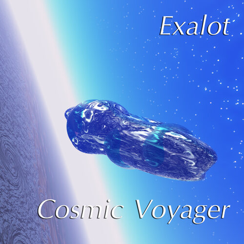

Deep space music radio · Broadcasting from 2103
DEEP SPACE 2103.
Deep space music, playing non-stop: space ambient, synthwave and Berlin School. Every album is free to stream and download under Creative Commons.

Press play to tune in
Tuning in…
From
UP NEXT
About the station
WHAT IS DEEP SPACE 2103?
Deep space music, all day
Deep Space 2103 is a free online radio station for deep space music. It plays slow, cosmic electronic albums one after another without stopping: long ambient drones, sequencer-driven Berlin School in the style of the 1970s German synth pioneers, and retro-futurist synthwave. Press play and leave it on for sleep, study, focus, reading or just staring at the stars.
Free and Creative Commons
Every album on air is released by its artist under a Creative Commons licence, so you can stream it here and download it for free. Each download has the artist, album, source and licence written into it. The music streams from the Internet Archive and the artists keep full credit.
Who you’ll hear
The library holds over 30 space music albums from artists including Exalot, Astrovia, Cousin Silas, Softspace, Alpha Trajectory, Quantum Mechanics, Herr Doktor, Lee Rosevere, Derek Nigell and Kirill Platonkin. Use Shuffle for a random journey, or pick any album in the library below.
The library
THE LIBRARY.
All music is used under the licence shown on each album. Downloads have the artist, album, source page and licence written into the MP3 tags. Album downloads also include a CREDITS.txt file. Licences checked 10 October 2026.
If you hold the rights to any music here and want it taken down, message me on X or Instagram and I’ll remove it.